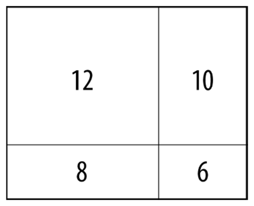
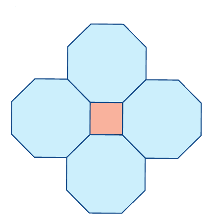
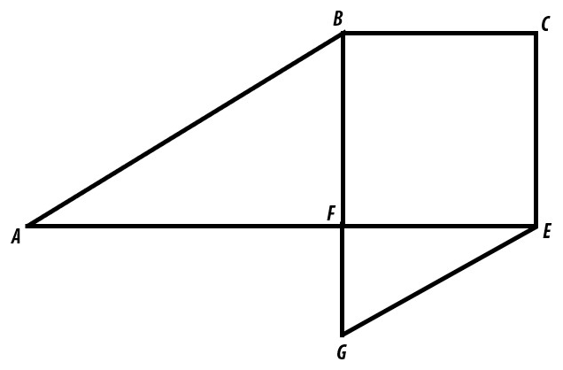
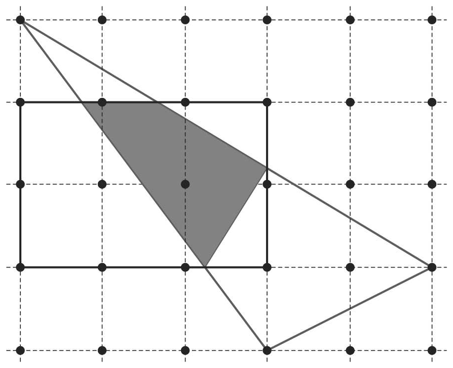
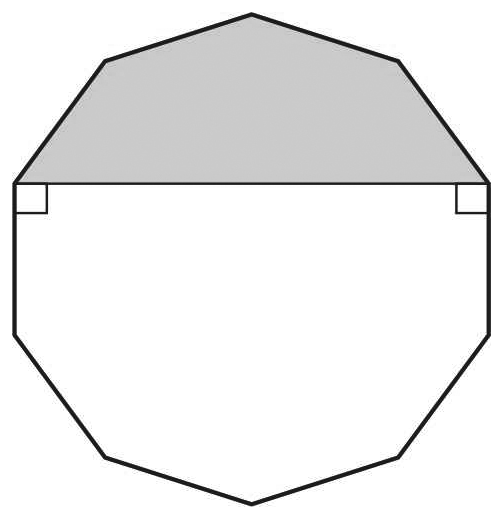
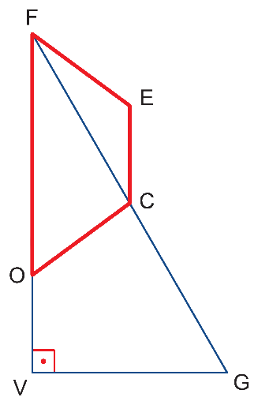
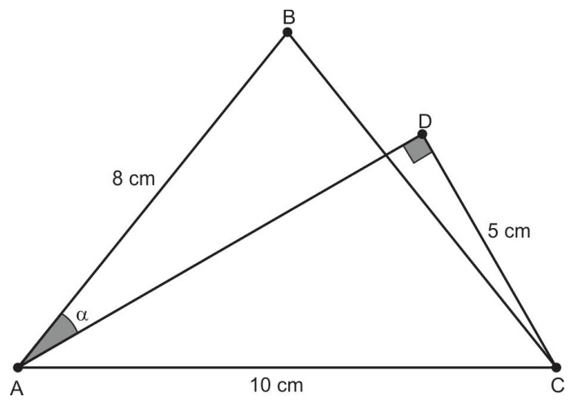
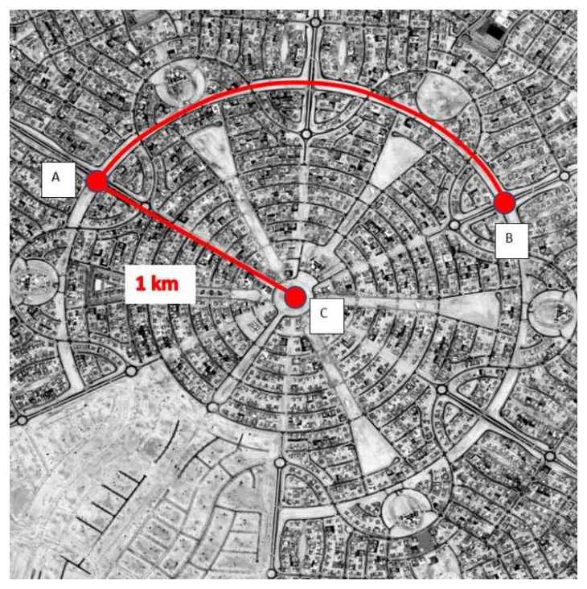
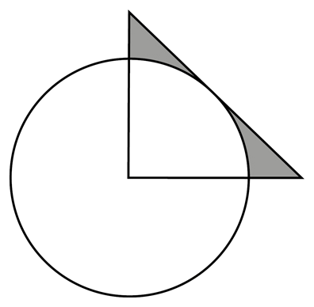
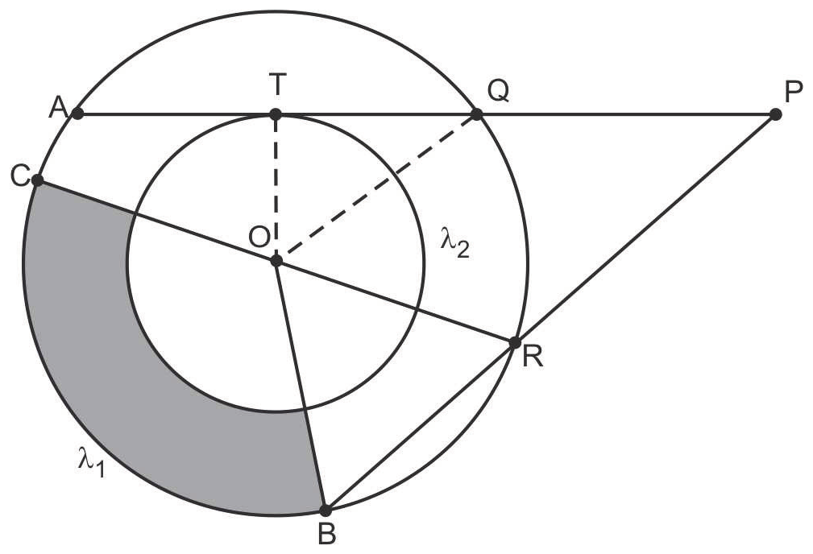

Parte 1 · Matemática · 19 questões reais da FGV
Geometria plana é o 2º tema que mais cai na Matemática da FGV (19 das 165 questões analisadas). As questões vêm em quatro blocos, do mais básico ao mais trabalhoso dentro de cada um. Resolva sem olhar o gabarito: ele fica no fim desta parte, com a resolução de cada questão.
Tudo o que as 19 questões exigem, numa página
Triângulos
\[ A=\frac{b\cdot h}{2} \qquad A=\frac{a\,b\,\operatorname{sen}\theta}{2} \qquad a^2=b^2+c^2 \ \text{(Pitágoras)} \]
Equilátero de lado \(\ell\): \(h=\frac{\ell\sqrt3}{2}\), \(A=\frac{\ell^2\sqrt3}{4}\). Retângulo isósceles de catetos \(c\): hipotenusa \(c\sqrt2\) e altura relativa à hipotenusa \(\frac{c\sqrt2}{2}\).
Semelhança: ângulos iguais e lados proporcionais. Se os lados estão na razão \(k\), as áreas estão na razão \(k^2\).
Quadriláteros
Retângulo \(b\cdot h\) · quadrado \(\ell^2\) · paralelogramo \(b\cdot h\)
\[ \text{losango: } A=\frac{D\cdot d}{2}=\text{lado}\times\text{altura} \qquad \text{trapézio: } A=\frac{(B+b)\,h}{2} \]
Retângulo de lados \(x\) e \(y\): perímetro \(2(x+y)\). Num losango, os quatro lados são iguais.
Polígonos
\[ S_i=(n-2)\cdot180^\circ \qquad \hat a_i=\frac{(n-2)\cdot180^\circ}{n} \qquad \hat a_e=\frac{360^\circ}{n} \]
Polígono regular: \(A=\frac{P\cdot a}{2}\) (\(a\) = apótema), ou \(n\) triângulos iguais com vértice no centro, de ângulo central \(\frac{360^\circ}{n}\). Hexágono regular = 6 triângulos equiláteros. Em cada vértice de um ladrilhamento, os ângulos somam \(360^\circ\).
Circunferência e círculo
\[ C=2\pi r \qquad A=\pi r^2 \qquad s=r\cdot\theta \ \ (\theta \text{ em radianos}) \]
Setor de ângulo \(\alpha\): \(\frac{\alpha}{360^\circ}\cdot\pi r^2\). Coroa: \(\pi(R^2-r^2)\). \(180^\circ=\pi\) rad.
Corda de comprimento \(c\) a uma distância \(d\) do centro: \(r^2=d^2+\left(\frac{c}{2}\right)^2\). A tangente é perpendicular ao raio no ponto de tangência.
Potência de ponto e ampliação
Potência de ponto: se de um ponto \(P\) saem duas secantes que cortam a circunferência em \(A, B\) e \(C, D\), então \(PA\cdot PB=PC\cdot PD\); com uma tangente \(PT\), \(PT^2=PA\cdot PB\). Ampliação: multiplicar os comprimentos por \(k\) multiplica as áreas por \(k^2\) (aumentar o diâmetro em 10% aumenta a área em 21%, porque \(1{,}1^2=1{,}21\)).
Questões 1 a 4
1Vestibular FGV 2026.2 · Questão 8questão real
Eduardo tem um pedaço de arame com 12 cm de comprimento. Ele deseja dobrar o arame para formar as seguintes figuras geométricas, uma de cada vez:
A(s) figura(s) que Eduardo consegue formar é (são)
2Vestibular FGV 2026.2 · Questão 5questão real
Ravi está na fila de uma roda gigante e está se perguntando sobre a velocidade com que as cabines se movem quando a roda gira.
Ele reuniu três informações para fazer a estimativa: a roda-gigante tem 90 metros de altura (seu diâmetro), o passeio completo durou exatos 30 minutos e, nesse tempo, a roda deu 2 voltas completas sem parar.
Usando a aproximação de \(\pi\approx 3\), a velocidade média da cabine, em metros por minuto, é
3FGV‑SP 2023.2 · Administração · Questão 11questão real
O retângulo R da figura foi dividido em exatamente quatro retângulos que têm perímetros 6, 8, 10 e 12 cm. O perímetro do retângulo R, em cm, é

4FGV‑SP 2020 · Economia · Questão 9questão real
Um polígono regular de x lados está perfeitamente cercado por polígonos regulares idênticos de y lados, sem sobreposições ou espaços livres. Por exemplo, a figura mostra a situação descrita para o caso em que x = 4 e y = 8.

A soma dos valores de y para os casos em que x = 3 e x = 10 é
Questões 5 a 12
5FGV‑SP 2023.2 · Administração · Questão 4questão real
O gerente de uma nova pizzaria deseja definir os tamanhos da pizza gigante e da pizza míni. Para isso, ele quer que a quantidade em uma pizza gigante seja igual à de quatro pizzas míni. A quantidade de pizza é medida como a área de seu círculo. Sabendo que o raio da pizza míni é de 5 cm, o raio da pizza gigante (em centímetros) que atende às exigências do gerente é de
6FGV‑SP 2024.2 · Administração · Questão 11questão real
O gerente de marketing de uma empresa de pasta de dentes observou que os furos nos tubos por onde sai a pasta eram mais estreitos do que os das empresas concorrentes. Ele propôs aos executivos ampliar os furos. Ele deseja apresentar o aumento esperado no consumo, supondo que os consumidores continuem utilizando, a cada escovação, um cilindro de pasta sobre a escova de dentes com a mesma altura a que já estão acostumados, independentemente da grossura do cilindro. Com base nessa hipótese, qual seria o aumento percentual esperado no consumo se o diâmetro do furo fosse ampliado em 10%?
7FGV‑SP 2022 · Administração · Questão 2questão real
Um círculo e um quadrado são desenhados em um plano, de modo que tenham uma parte sobreposta. A área da região do plano coberta pelas figuras é 351 cm2 e a parte sobreposta tem área igual a 73 cm2. A área do círculo é 255 cm2. O perímetro do quadrado, em cm, é
8FGV‑SP 2024.2 · Administração · Questão 2questão real
Na figura abaixo, os segmentos AB e GE são paralelos e BCEF é um quadrado. Se o segmento AF mede 9 m e FB mede 6 m, qual é a área, em m2, da figura toda (ABCEGF)?

9FGV‑SP 2023.2 · Administração · Questão 8questão real
Considere um losango ABCD e o ponto P pé da perpendicular traçada de B sobre o lado AD. Sabe-se que AP = 3 e PD = 4.
A área desse losango é
10Vestibular Unificado FGV 2026.1 · Questão 4questão real
Considere um triângulo ABC e seja M o ponto médio do lado BC. Sejam, ainda, N e P pontos sobre o lado AC tais que os comprimentos dos segmentos AN, NP e PC sejam iguais.
A razão entre as áreas dos triângulos MNP e ABC é:
11FGV‑SP 2022 · Economia · Questão 20questão real
Em uma malha quadriculada cada quadrículo tem 1 cm de lado. Um triângulo e um retângulo foram desenhados nessa malha com vértices nas intersecções dos quadrículos, conforme mostra a figura.

A área do quadrilátero em destaque, cujos vértices são os pontos de intersecção entre os lados do retângulo e os lados do triângulo, é
12FGV‑SP 2022 · Economia · Questão 22questão real
A área de um polígono regular pode ser calculada pela fórmula \(A=\frac{Pa}{2}\), em que P é o perímetro e a é o apótema do polígono. Em um decágono regular, uma de suas diagonais forma ângulos retos com seus lados, conforme mostra a figura.

Sendo 100 cm2 a área desse decágono, a área do pentágono destacado vale
Questões 13 a 15
13FGV‑SP 2022 · Administração · Questão 4questão real
Um robô explorador de terreno foi programado para executar os seguintes passos:
(1) Ande x metros em frente, em linha reta.
(2) Colha uma amostra do terreno.
(3) Gire 90° para a esquerda.
(4) Modifique o valor de x para 2x.
(5) Volte para o passo (1) e repita a sequência de passos.
Antes de começar a exploração, o valor inicial de x é ajustado para 1. O robô inicia então sua exploração e, depois de colher 5 amostras do terreno, fica sem bateria e para. A distância, em metros, do ponto de partida ao de parada do robô situa-se entre
14FGV‑SP 2020 · Economia · Questão 6questão real
Na figura, FECO é um trapézio isósceles, com FE = OC = 5 cm, EC = 4 cm e FO = 10 cm, e FGV é um triângulo retângulo com ângulo reto em V, com C em \(\overline{FG}\) e O em \(\overline{FV}\).

Sabendo-se que C é ponto médio de \(\overline{FG}\), a medida de \(\overline{OV}\), em centímetros, é
15FGV‑SP 2022 · Economia · Questão 19questão real
Um triângulo isósceles ABC e um triângulo retângulo ADC têm um lado em comum, conforme mostra a figura.

Sendo \(\overline{BA}\equiv\overline{BC}\), o valor de \(\operatorname{sen}\alpha\) é
Questões 16 a 19
16FGV‑SP 2022 · Administração · Questão 9questão real
As avenidas de certa cidade são raios de uma circunferência que se encontram na praça central C da cidade. As ruas são transversais às avenidas e são circunferências com centro na praça central C.
Um motorista de aplicativo está posicionado no ponto A, cruzamento de uma rua com uma avenida, situado a 1 km da praça central. Ele recebe uma chamada para ir até o ponto B, cruzamento da mesma rua com outra avenida. O motorista pode ir até B diretamente pela rua onde ele está, percorrendo um arco de círculo, ou pode ir primeiro até a praça central C e depois seguir pela outra avenida até o ponto B. Ele consulta o aplicativo para saber qual desses percursos é o mais curto e o aplicativo informa que a distância em ambos os percursos é a mesma.

O ângulo \(A\hat{C}B\), em radianos, é
17FGV‑SP 2023 · Administração e Economia · Questão 6questão real
O círculo da figura tem raio 2. O triângulo é um triângulo retângulo e isósceles. O vértice correspondente ao ângulo reto coincide com o centro do círculo. A hipotenusa do triângulo tangencia a circunferência. A área da parte do triângulo que está fora do círculo (parte sombreada) é

18FGV‑SP 2022 · Administração · Questão 11questão real
Três retas paralelas e igualmente espaçadas determinam em um círculo três cordas de comprimentos 54, 54 e 46. A distância entre duas dessas retas, adjacentes entre si, é
19FGV‑SP 2022 · Economia · Questão 21questão real
No plano, as circunferências \(\lambda_1\), de raio 5 cm, e \(\lambda_2\) têm o mesmo centro O. A e B são pontos de \(\lambda_1\) tais que \(\overline{PA}\cap\lambda_1=Q\), \(\overline{PB}\cap\lambda_1=R\) e \(\overline{PA}\) é tangente a \(\lambda_2\) no ponto T, conforme mostra a figura.

As medidas de \(\overline{PA}\) e \(\overline{PB}\) são, respectivamente, 14 cm e 12 cm e \(\overline{PR}\) é 1 cm maior que \(\overline{PQ}\). Sendo \(\overline{CR}\) um diâmetro de \(\lambda_1\) e usando a aproximação \(\pi=3\), a área destacada na figura vale